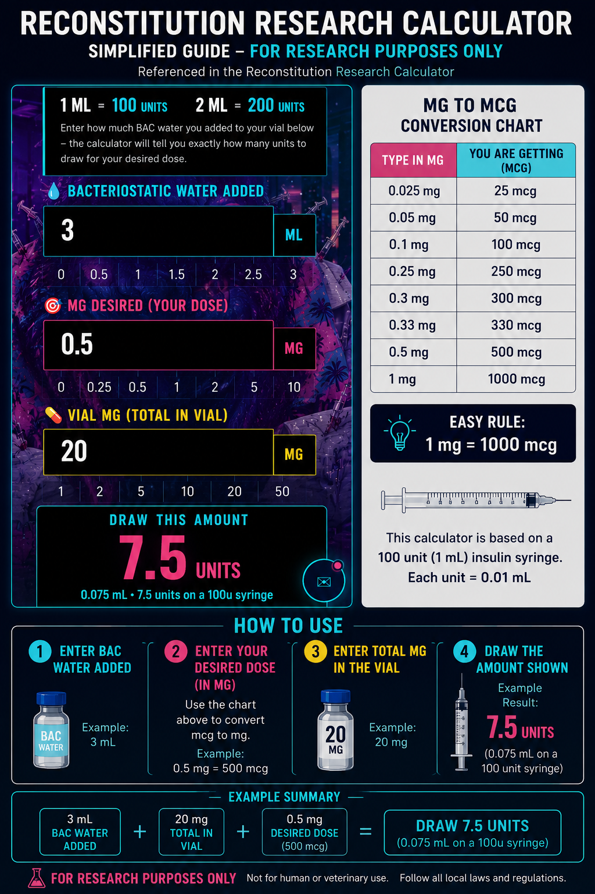

Find the peptides researched for your goals.
Answer three quick questions. Get a ranked list of research peptides with why each one matches, a typical starting protocol, a dose schedule and a shopping list you can print or save.
- 1Answer 3 questionsWho it's for, your goals, a quick review
- 2See ranked matchesWith the research reason for each
- 3Build & save your planSchedule, shopping list, print or Notes
Who are these results for?
A few peptides are researched only in men or only in women, so this keeps your matches relevant.
What do you want to work on?
Pick everything that applies. Peptides that match more of your goals rank higher.
Review & get your matches
Here's what you told us. Tap Back to change anything.
- This is an educational research tool, not medical advice or a prescription.
- Protocols shown are typical research starting points, not recommendations for you.
- Talk to a licensed doctor and get blood work before starting anything, and double-check all math.
Your matches
Keep your results
Your report lists every match, why it matches and its typical protocol, plus any schedule you build below.
Look up a single peptide
Get its description and typical research protocol, then send it straight to the schedule builder.
🌡️ Inflammation
What it is, how to measure it, and which peptides this tool links to it.
Two kinds
Short-term (acute) is healthy. It's the redness and swelling that repairs a cut, a strain or an infection, then switches off.
Long-term (chronic, low-grade) doesn't switch off. It's linked with joint pain, gut problems, skin flare-ups, insulin resistance and heart disease.
Where it shows up
- 🌀Gut — bloating, IBS/IBD symptoms, food reactions
- 🦴Joints & tendons — stiffness, swelling, slow healing
- ✨Skin — redness, acne, eczema-type flares
- 🔥Whole body — fatigue, aches, brain fog
Blood tests to ask about
- 🩸hs-CRP — the main general inflammation marker
- 🩸ESR — a slower-moving inflammation marker
- 🩸CBC with differential — white blood cell picture
- 🩸HbA1c / fasting insulin — blood sugar, a big driver of chronic inflammation
Test before and during any research so you can see whether anything actually changes.
Peptides this tool links to inflammation
Resources before you start
Baseline blood work, plus vitamins, supplements and peptides by condition with studies and dosages.
🩸 Suggested Blood Work BEFORE Starting Any Protocol
📋 Comprehensive Metabolic & Hormone Panel: Comprehensive Metabolic Panel (CMP) · Complete Blood Count (CBC) · Lipid Panel (Total Cholesterol, LDL, HDL, Triglycerides, VLDL) · hs-CRP · ESR · TSH · Free T4 · Estradiol (Sensitive) · Total Testosterone · Free Testosterone · SHBG · LH · FSH · Prolactin · DHEA-S · Cortisol (AM) · Vitamin D (25-OH) · Vitamin B12 · Folate · Iron Panel · Ferritin · Magnesium · Zinc · Liver Enzymes (ALT, AST, GGT) · Kidney Function (BUN, Creatinine)
🦋 Ask Your Doctor to Add — Thyroid Panel: Thyroid issues (hypo/hyperthyroidism) can mimic or worsen symptoms people often blame on peptides — fatigue, weight changes, mood, heart rate. If not already included, ask for: TSH, Free T3, Free T4, and Thyroid Antibodies (TPO/TgAb) if there's a family history of thyroid disease.
🍬 Ask Your Doctor to Add — Insulin Resistance Panel: Insulin resistance can drive fat gain, cravings, and energy crashes — and is often missed on a standard panel since fasting glucose alone can look "normal." If not already included, ask for: Fasting Insulin, Fasting Glucose, HbA1c (3-month average blood sugar), and HOMA-IR (calculated from fasting glucose + insulin).
🔥 Ask Your Doctor to Add — Inflammation Panel: Chronic inflammation can affect recovery, gut health, joints, and how well your body responds to peptides. If not already included, ask for: hs-CRP (high-sensitivity C-Reactive Protein), ESR (Erythrocyte Sedimentation Rate), and Homocysteine.
🟢 Ask Your Doctor to Add — Liver Panel: Many peptides (and underlying issues like fatty liver) are processed through the liver, so a baseline liver panel helps your doctor catch problems early and track changes over time. If not already included, ask for: ALT, AST, ALP (Alkaline Phosphatase), GGT, Total & Direct Bilirubin, Albumin, and Total Protein.
Even if your doctor disagrees, talk to them anyway. They may catch risks, suggest safer alternatives, or adjust their perspective as new research emerges. Always be honest with your doctor — if they refuse to help or listen, find another. You deserve a doctor who supports you.
Your health. Your responsibility. You decide.
🇺🇸 Thank you to all service men & women — God bless you all.
💊 Vitamins, Supplements & Peptides by Condition — with Studies & Dosages
🌸 PCOS — Vitamins, Supplements & Peptides
🍬 Insulin Resistance — Vitamins, Supplements & Peptides
🔥 Fat Loss — Vitamins, Supplements & Peptides
💪 Muscle & Recovery — Vitamins, Supplements & Peptides
🧬 Anti-Aging & Longevity — Vitamins, Supplements & Peptides
🧠 Cognitive & Focus — Vitamins, Supplements & Peptides
😴 Sleep — Vitamins, Supplements & Peptides
🌀 Gut Health — Vitamins, Supplements & Peptides
🦴 Autoimmune & Rheumatic Disease (RA · Lupus · Psoriasis · IBD · Polymyalgia · Sjögren's) — Vitamins, Supplements & Peptides
🦋 Hashimoto's & Lupus — Vitamins, Supplements & Peptides
🎗️ Cancer Support & Chemo Recovery — Immune Rebuilding, Thymosin Alpha-1 & Black Seed Oil
Key mechanisms during chemotherapy:
• Rebuilds T-cell and NK cell populations suppressed by chemo
• Enhances tumor antigen recognition (dendritic cell activation)
• Reduces treatment-related infections by restoring innate immunity
• Anti-tumor activity: stimulates IL-2, IFN-γ, TNF-α against cancer cells
• Shown to improve overall survival as adjunct therapy in some cancer trials
Research protocol (discuss with oncologist): 1.6mg SubQ 2x/week during chemo cycles.
📖 Garaci et al. 2012, PMID 22325148 · Lo et al. 2022 (NSCLC + TA-1)
During chemotherapy — protective effects:
• Reduces cisplatin-induced kidney and liver toxicity
• Protects against doxorubicin cardiotoxicity (heart protection)
• Reduces methotrexate-induced oxidative damage via glutathione upregulation
• Reduces myelosuppression (bone marrow suppression) from chemo in some models
• Anti-nausea and appetite support effects documented
Anti-tumor mechanisms studied:
• Induces apoptosis via p53 and caspase-3 activation
• Inhibits NF-κB — blocks tumor-promoting inflammation
• Studied in breast, lung, colon, cervical, liver, and blood cancers
Post-chemo recovery:
• Liver-protective — supports recovery of liver detox capacity
• Immune-modulating — helps restore NK and T-cell activity
• Gut-protective — supports intestinal recovery after chemo
Dose (research context): 1–2 tsp cold-pressed oil daily, or 500–1,000mg capsule form, with food.
📖 Badary et al. 2000, PMID 10822163 · Gali-Muhtasib et al. 2006, PMID 16537386 · Ahmad et al. 2013, PMID 23823094
Build your dose schedule
Tap Build my schedule on any match to fill this in automatically, or enter your own numbers. Every schedule you build is added to your report and shopping list.
❓ Help & examples Units math, step-by-step, Lock Ratio, GHK-Cu notes
🧪 Reconstitution Info & Example (mg, mcg, units)
MG to MCG quick chart: 0.025mg = 25mcg · 0.05mg = 50mcg · 0.1mg = 100mcg · 0.25mg = 250mcg · 0.3mg = 300mcg · 0.33mg = 330mcg · 0.5mg = 500mcg · 1mg = 1000mcg.
Example: You add 3 mL of BAC water to a 20mg vial, and your desired dose is 0.5mg (500mcg).
Draw amount = (desired dose ÷ total vial mg) × (mL added × 100 units/mL) = (0.5 ÷ 20) × 300 = 7.5 units (0.075 mL on a 100u syringe).
📘 How To Use This Calculator (Step-by-Step)
Enter how much bacteriostatic water you added to the vial. Example: 3 mL.
Use the MG ↔ MCG chart above to convert mcg to mg if needed. Example: 0.5 mg (= 500 mcg).
This is the total amount of peptide in the vial, printed on the label. Example: 20 mg.
The calculator instantly shows how many units to draw on a 100-unit (1mL) insulin syringe. Example result: 7.5 units (0.075 mL).


ℹ️ What does "Lock Ratio" mean? (example)
Turn it OFF to set a custom ratio — type your own mg-per-mL value in the box that appears, then turn the lock back ON to use that custom ratio going forward.
✨ GHK-Cu — What It's For & How to Use It
Typical use: Dosed once daily, commonly around 1-2mg/day, for 8-12 week cycles. Some research users apply it topically as well as via injection.
Note: Copper peptides can oxidize/discolor in solution over time — store reconstituted vials in the fridge and watch for color changes (a slight blue/green tint is normal, but a strong shift may mean it's degrading).